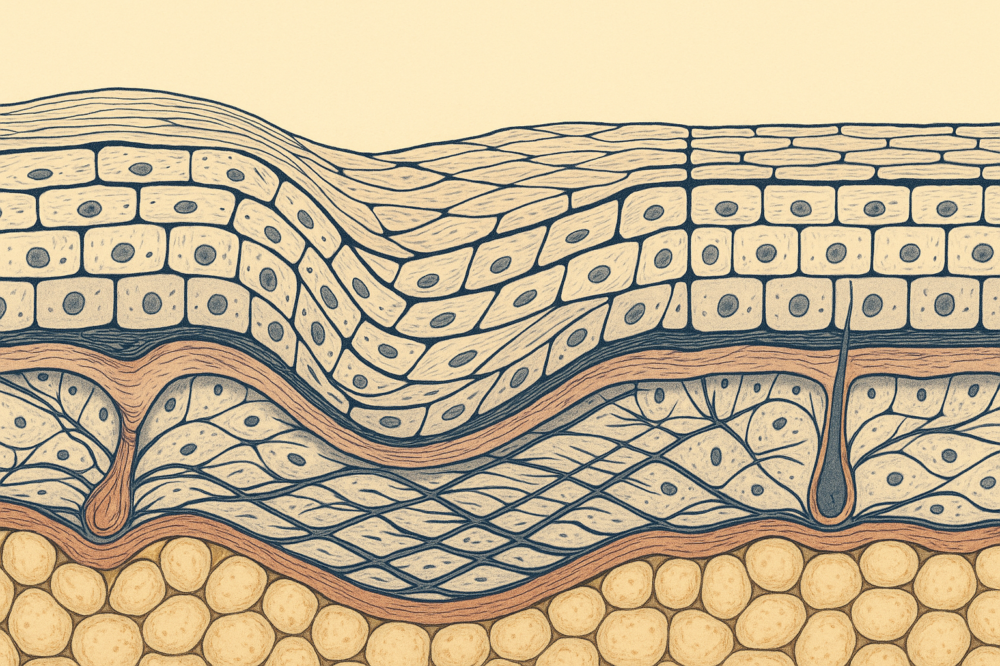
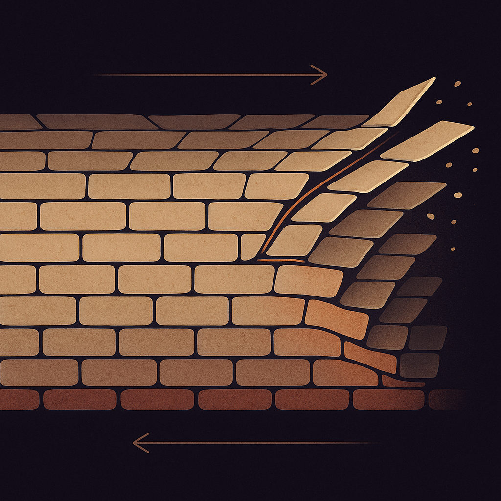
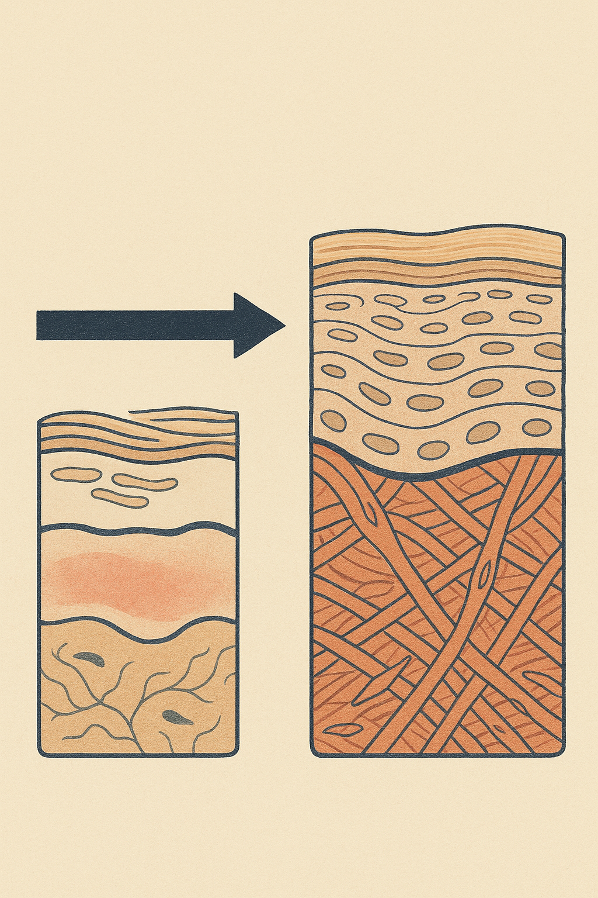

Review below. Reply approve to publish the Facebook post, or tell me edits.

Eyelid skin is roughly 0.5 mm thick. The skin on your cheek is closer to 2 mm. So the thinnest tissue on your entire body sits directly over a muscle that moves thousands of times a day, carries fewer oil glands than anywhere else, and happens to be the exact spot most of us rub hardest: hay fever, tiredness, eye makeup, the 4 pm screen rub.
We talk about skin ageing as three things: sun, time and hormones. There is a fourth input almost nobody names, and it is the one you control most easily. Mechanical load.
This is not a scare piece. It is an audit.
Think of skin as a two-layer composite. On top sits the epidermis, a thin, constantly renewing sheet that replaces itself roughly every 4 to 6 weeks. Underneath is the dermis, the thicker layer carrying the scaffold that gives skin its spring: collagen and elastin. Collagen is the tensile fibre, the rope that resists stretching. Elastin is the recoil, the elastic band that snaps everything back after you smile, squint or sleep on your face.
Like any material, this composite has a load tolerance. It handles occasional stress beautifully. What it handles less well is the same small stress, in the same place, thousands of times.
Mechanical load on skin comes in two flavours, and they behave differently.
Compression is pressure held for hours. A cheek pressed into a pillow for eight hours a night, folding the skin along the same lines. Compression does not drag the layers, it creases them, repeatedly, in one spot. Sleep lines on one side of the face are compression made visible.
Shear is rubbing sideways. A towel dragged across the face. A sleeve wiped over the eyes. A knuckle ground into the eye corner. Shear drags the top layers of skin across the layers beneath them, and it is the force people most underestimate, because each individual rub feels like nothing.
Go back to those numbers. About 0.5 mm against about 2 mm. Thin tissue has less cushioning to distribute a load, so the same sideways drag reaches deeper. Add the highest movement rate on the face and the lowest oil output, and the eye area is simply where the daily bill comes due first.
Chronic low-grade rubbing keeps skin in a mild, ongoing state of irritation and repair. Two things tend to follow.
First, in darker or more reactive skin, that constant low simmer can settle as post-inflammatory darkening at the friction site. The classic example is the faint darkened line where glasses or a strap sits day after day. Nothing dramatic happened, the site was simply never left alone.
Second, friction disrupts the skin barrier, and a disrupted barrier loses water faster. An area with elevated water loss looks crepey and finely lined before anything structural has actually changed in the dermis. It is a texture problem masquerading as an ageing problem.
To be clear: this is about how skin looks and behaves, not a diagnosis. If a patch of skin is persistently irritated, darkened or changing, that is a question for a doctor, not a habit swap.
Run through a normal day and tally the contact:
None of these is a problem once. All of them are a load when repeated daily for years.
None of this costs anything.
Mechanical load is one input among several, not the master key. Reducing it will not undo photoageing, and nothing here changes skin overnight. What you can reasonably expect, over weeks of lower daily friction, is skin that looks calmer, less reactive and less prone to that crepey, dehydrated texture at the usual rub sites. Subtle and gradual, not a transformation.
The logic here is the same as sunscreen or sleep: you are lowering the total daily load on a tissue you cannot replace. Skin longevity is mostly a game of subtraction. Less UV. Less friction. Less unnecessary drag on the thinnest, hardest-working areas.
Small loads, counted honestly, then reduced. That is the whole idea.
Separately, if you want a closer look at what we make, our light therapy mask is here: Redermis Light Therapy Mask

Sun. Time. Hormones. And a fourth thing nobody puts on the list: friction.
Eyelid skin is roughly 0.5 mm thick. Your cheek is closer to 2 mm. The thinnest skin on your body is also the skin most of us rub the hardest.
Skin is a material under daily physical load. Pressure held for hours folds it along the same lines. Rubbing drags the top layers sideways across the ones underneath.
Repeated rubbing keeps skin in a low-grade repair state. It can look crepey and reactive well before anything structural has changed.
Worth a one-day audit. Towel-drying by rubbing. Cleansing with pressure. Dragging a cotton pad across the eye. Rubbing your eyes on waking. Phone pressed to the cheek. Face-down sleeping.
The swap is simple: press instead of rub, and let contact time do the work. Hold an eye pad on for 20 seconds instead of dragging it across.
This will not undo sun damage, and nothing changes overnight. It shows up as skin that is calmer and less reactive over weeks.
Which one is your habit? Most people find two.
#skinscience #skinlongevity #skincareroutine
FIRST COMMENT: If you ever want a closer look at the low-contact end of a routine, it is here: https://redermis.com.au/products/red-light-therapy-face-neck-mask
IMAGE PROMPT: Editorial science illustration in the style of New Scientist or Scientific American: a single clean diagram of a woven grid of fine collagen-like fibre strands shown in two halves of one frame. Left half: calm, evenly spaced, orderly parallel fibres. Right half: the same fibre grid skewed, dragged and bunched sideways beneath one sweeping horizontal arrow indicating shear drag. Warm neutral paper background, terracotta and deep navy linework, subtle grain texture, precise geometric composition, generous negative space. No text, no labels, no people, no faces, no devices, no products.

Sun. Time. Hormones. And the one nobody counts: friction.
We obsess over what we put on our skin. We rarely think about how we touch it.
Skin is a material, and it responds to load like one. Two forces matter. Compression presses and folds it. Shear drags the top layers across the ones beneath. Shear is the sneaky one, and it is what rubbing does.
Now the numbers. Eyelid skin is about 0.5 mm thick. Your cheek is closer to 2 mm. The one you rub the most, almost certainly.
Chronic rubbing keeps skin in a mild, constant repair state. Long before anything structural changes, it can read as crepey, reactive, easily flushed.
Today's audit: towel rubbing, dragging cotton pads across the eye, rubbing tired eyes.
The swap is simple. Press, do not rub. Contact time, not pressure. Hold, do not drag.
Expect weeks of calmer, less reactive skin, not a transformation. And none of it replaces sun protection.
Which is yours: rubbing your eyes or towel-drying? Tell us below.
If you ever want a closer look at the low-contact end of a routine, the link is in our bio.
#skincareaustralia #skinscience #skinlongevity #skinbarrier #gentleskincare #redlighttherapy #ledmask #healthyskinhabits #skincareover30 #skincareover40 #auskincare #skincareroutine
IMAGE PROMPT: see image-prompts.md (Instagram)
## Title
Eyelid skin is about 0.5 mm thick. Here is how daily rubbing adds up.
## Description
Eyelid skin is roughly 0.5 mm thick against about 2 mm on the cheek, and it takes the most daily rubbing. Three swaps that cost nothing: 1. Press-dry, hold the towel for two seconds instead of rubbing. 2. Soak a pad and rest it on the closed eye for 20 seconds instead of dragging. 3. Sleep on your back or alternate sides to ease the nightly fold. For the low-contact end of a routine, our light therapy mask: https://redermis.com.au/products/red-light-therapy-face-neck-mask
## Hashtags
#SkinCareTips #SkinLongevity #HealthySkinHabits #RedLightTherapy
Note: this pin reuses the Instagram image.